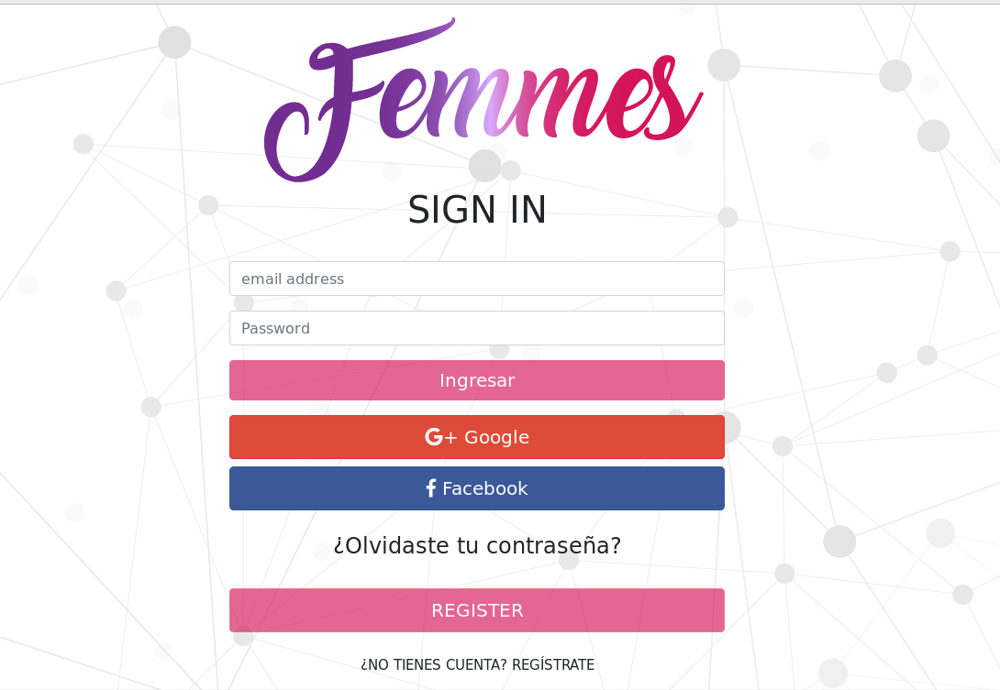
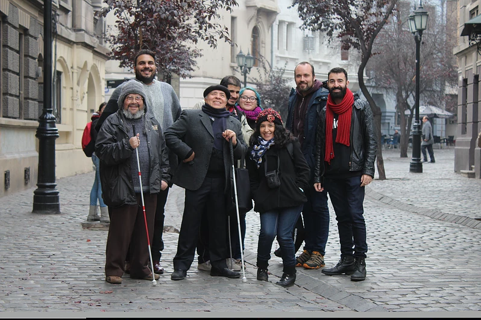

<meta charset="UTF-8">


</body>

</html>

<head>
    <link rel="stylesheet" href="https://stackpath.bootstrapcdn.com/bootstrap/4.1.3/css/bootstrap.min.css" integrity="sha384-MCw98/SFnGE8fJT3GXwEOngsV7Zt27NXFoaoApmYm81iuXoPkFOJwJ8ERdknLPMO"
        crossorigin="anonymous">
    <link href="https://stackpath.bootstrapcdn.com/font-awesome/4.7.0/css/font-awesome.min.css" rel="stylesheet"
        integrity="sha384-wvfXpqpZZVQGK6TAh5PVlGOfQNHSoD2xbE+QkPxCAFlNEevoEH3Sl0sibVcOQVnN" crossorigin="anonymous">
    <link href="https://fonts.googleapis.com/css?family=Josefin+Sans" rel="stylesheet">
    <link href="//cdn.rawgit.com/noelboss/featherlight/1.7.13/release/featherlight.min.css" type="text/css" rel="stylesheet" />
    <link rel="stylesheet" href="./node_modules/animate.css/animate.min.css">
    <link rel="stylesheet" href="indexcss.css">
    <link rel="stylesheet" href="style2.css">
</head>

<body>


    <!-- Masthead -->
    <nav class="navbar navbar-expand-sm bg-dark navbar-dark">
            <!-- Brand -->
            <a class="navbar-brand" href="#">Cynthia Rojas</a>
          
            <!-- Toggler/collapsibe Button -->
            <button class="navbar-toggler" type="button" data-toggle="collapse" data-target="#collapsibleNavbar">
              <span class="navbar-toggler-icon"></span>
            </button>
          
            <!-- Navbar links -->
            <div class="collapse navbar-collapse" id="collapsibleNavbar">
              <ul class="navbar-nav">
                <li class="nav-item">
                  <a class="nav-link" href="#proyectos">Proyectos</a>
                </li>
                <li class="nav-item">
                  <a class="nav-link" href="#Acerca">Acerca de mi</a>
                </li>
                <li class="nav-item">
                  <a class="nav-link" href="#Contacto">Contacto</a>
                </li> 
              </ul>
            </div> 
          </nav>

    <header class="masthead text-white text-center">
        <div class="overlay"></div>
        <div class="container">
            <div class="row">
                <div class="col-lg-9 mx-auto mt-5">
                    <section>
                        <div id="particles-js">
                            <i class="letter">Soy Cynthia Rojas</i> <span class="text-change"></span></div>
                    </section>
                </div>

            </div>
        </div>

    </header>
        <br>
        <br>
        <A name="proyectos"></A>
        <h2 class="hab">Proyectos</h2>
        

        <section class="container" id="photos">
                <div class="container">
                        <div class="row">
                            <div class="col-sm-4 portfolio-item">
                                <div class="d-flex flex-column">
                                    <div class="p-2 centrado">
                                    <a href="https://socialnetwork2-36f58.firebaseapp.com"></a>
                                    </div>
                                    <div class="p-2 containerp">
                                        <p>Red social enfocada a la mujer, que busca crear redes de contención activa mendiante posteos
                                            informativos creados por la comunidad
                                            fue implementada con Angular6 y angular fire (firebase/firedatabase) para login y colleciones de comentarios
                                        </p>
                                        <br>
                                    </div>
                                    <div class="p-2 centrado">
                                        <button class="fa fa-Github btn btn-primary" id="repoSocial">Repo</button>
                                        <button class="fa fa-desktop btn btn-primary" id="demoSocial">Demo</button>
                                    </div>
                                </div>
                            </div>
                            <div class="col-sm-4 portfolio-item">
                                    <div class="d-flex flex-column">
                                            <div class="p-2 centrado">
                                                    <a href="https://www.npmjs.com/package/cynthia-md-links"></a>
                                            </div>
                                            <div class="p-2 containerp">
                                        <p>Libreria de archivos markdown, que lee archivos read me y busca links http, entregando status ok para links válidos y is broken en caso de allar vacios. Fue implementada en
                                        Nodejs y npm por el lado backend. contiene comando cli para ejecutar desde la consola. </p>
                                                      
                                            </div>
                                            <div class="p-2 centrado">
                                                
                                                    <button class="fa fa-Github btn btn-primary" id="repoNpm">Repo</button>
                                                    <button class="fa fa-desktop btn btn-primary"id="demoNpm">Demo</button>
                                            </div>
                                    </div>
                            </div>
                          
                            <div class="col-sm-4 portfolio-item">
                                     <div class="d-flex flex-column"> 
                                            <div class="p-2 centrado">
                                                    <a href="https://valerianotvalentina.github.io/scl-2018-05-bc-core-pm-datadashboard/src/"></a>
                                            </div>
                                            
                                            <div class="p-2 containerp">
                                                    <p>Datadashboard de alumnas de Laboratoria, busca y entrega información de las mistas en lecturas, quizzzes y completitud del Lms. trabajé en conjunto con ux encargandome del área Front-end fue implementado mediante consumo de Api rest en js puro</p> 
                                            </div>
                                           <div class="p-2 centrado">
                                               <br>
                                                    <button class="fa fa-Github btn btn-primary" id="repoData">Repo</button>
                                                    <button class="fa fa-desktop btn btn-primary" id="demoData">Demo</button>
                                           </div>
                                    </div>
                            </div>
                    
                        </div>
                    
                    </div>
        </section>


        <section class="testimonials text-center mybg">
            <div class="container">
                <div class="row">
                    <div class="col-sm-4 centradofoto">
                            
                    </div>
                    <div class="col-sm-8">
                            <h1>Acerca de mi</h1>

                            <p>Hola, si estas aquí es porque te interesa saber un poco más de mí: soy Cynthia Rojas, nací en Santiago de Chile hace ya bastante. Desde pequeña fuí muy curiosa y extrovertida
                            desde la escuela me llamó el participar en talleres y trabajar en conjunto. Siempre fuí cercana a la tecnología y las letras, desde la primera consola que tuve, hasta mi primero permio en poesía. 
                            de mayor, estudíé idioma y cultura japonesa, para luego entrar a la escuela de Derecho, participé tambien en juegos literarios de gabriela Mistral y en escuelas de poesía de la Dibam.
                            El espectro literato de Santiago me llevó a declamar mis escritos en distintos lugares, abríendome así un espacio para alimentar mi gusto por las presentaciones en el escenario.
                            avanzado el tiempo y por cosas del destino volví a estudiar culturas asiáticas, dando la entrada esta vez a la cultura coreana, lo que me llevó a trabajar en Kotra (korean bussines development center")
                            de traductora inglés español.
                            
                            de saltó conocí Laboratoria, y esa busqueda incesante de aprender me dejó en la programacion web, un camino totalmente distinto a las letras. 
                            En mis tiempo libres disfruto del buen café, de conversar con mis cercanos y coleccionar novelas gráficas. Ahora participo de manera activa en la Asociacion de muejeres en Videojuegos
                            para visibilizarnos dentro de la industria tanto como desarrolladoras como jugadoras profesionales.
                            Soy miembro del colectivo "otras maneras de mirar" donde hacemos cine personas con alguna discapacidad visual y ceguera total.
                            Una meta en este camino es llegar a desarrollar de manera pro inclusiva, creando herramientas para aquellos tienen alguna discapacidad, para aquellos que les dificulta el acceso a cualuier plataforma web
                            he ahi mi misión en este camino. Las tecnologías son para todos, los avances van a pasos agigantados y es por ello que sueño con una sociedad mas empática
                            y porque no, programando</p>

                          <ul></ul> <h6>Para saber mas de las instituciones que mencione, pincha las fotografias de esta seccion</h6></ul> 
                            
                    </div>
                </div>
                <br>
                <div class="row">
                        <div class="col-sm-6">
                         <a href="http://mujeresenvg.cl/"></a>
                        </div>
                        
                        <div class="col-sm-6">
                                <a href="https://otrasmanerasdemirar.wixsite.com/otras/talleres"></a></a>
                        </div>
                </div>

            </div>
            </section>

            <!-- Call to Action -->

            <section class="call-to-action text-white text-center">
                <h1>Habilidades</h1>
                <br>
                <br>
                <br>
                <br>
                <div class="overlay"></div>
                <div class="container">
                    <div class="row">
                        
                        
                        
                        

                    </div>
                </div>
                </div>
            </section>

            <!-- Footer -->
            <A name="Contacto"></A>
            <section id="footer">
                <div class="container">
                    <div class="row text-lg-center text-sm-center text-md-center mb-5">
                        <div class="col-lg-12 centrado">
                            <h2>Contacto</h2>
                            <ul class="list-unstyled list-inline social">
                                <li class="list-inline-item"><a href="https://www.linkedin.com/in/cyntthiah/"><i class="fa fa-LinkedIn"></i></a></li>
                                <li class="list-inline-item"><a href="https://github.com/cyntthiah"><i class="fa fa-Github"></i></a></li>
                                <li class="list-inline-item"><a href="https://www.instagram.com/glittecon/?hl=es-la"><i
                                            class="fa fa-Instagram"></i></a></li>
                                <li class="list-inline-item"><a href="./Cynthiarojas.pdf" target="_blank"><i class="fa fa-download"></i></a></li>


                            </ul>
                            <p class="text-center"> Copyright Cynthia Rojas. All right reserved. </p>
                        </div>


                    </div>
                </div>
            </section>
            <!--Footer -->

            <div class="scroll-top-wrapper ">
                <span class="scroll-top-inner">
                    <i class="fa fa-2x fa-arrow-circle-up"></i>
                </span>
            </div>
            <script src="https://code.jquery.com/jquery-3.1.1.min.js"></script>
            <script src="http://cdn.rawgit.com/noelboss/featherlight/1.7.13/release/featherlight.min.js" type="text/javascript" charset="utf-8"></script>
            <script src="https://cdnjs.cloudflare.com/ajax/libs/popper.js/1.14.3/umd/popper.min.js" integrity="sha384-ZMP7rVo3mIykV+2+9J3UJ46jBk0WLaUAdn689aCwoqbBJiSnjAK/l8WvCWPIPm49" crossorigin="anonymous"></script>
            <script src="https://maxcdn.bootstrapcdn.com/bootstrap/4.0.0/js/bootstrap.min.js"></script>
            <script src="app2.js"></script>
            <script src="min.js"></script>
            <script src="typed.js"></script>
            <script src="typedapp.js"></script>
            <script src="app3.js"></script>
</body>